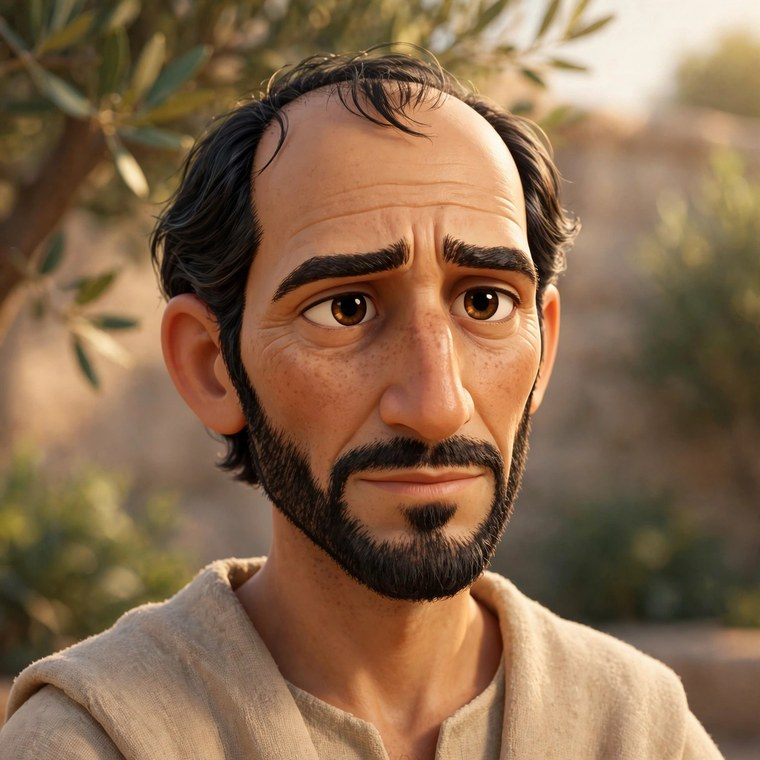
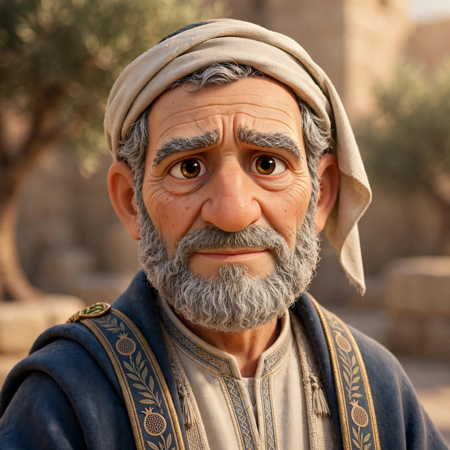

Jesus is in this work, and He has full authority over it. Everything on this wall was prayed over first and built second.
The baptism at the Jordan (Mark 1:9–11) — a frame from the film itself. The dove comes down on Jesus; John, the baptizer, stands beside Him in wonder.
“The beginning of the Good News of Jesus Christ, the Son of God.” Mark 1:1 (WEB)
Most animated films invent a new face for Jesus every time the camera turns. We did the opposite. One cast of characters was drawn once — these faces — and locked, so the same Jesus who is baptized in Mark will walk through John and Genesis after it. Every scene in every film is graded against these sheets before it is allowed to move, and the pictures are brought to life by hand while Grandpa Teddy reads the Word of God word for word. What you see below is that company — the cast of the Gospel films, exactly as they appear on screen. It begins with Mark chapter 1 and grows chapter by chapter: the whole book of Mark, and the Gospels that follow. A new face joins this page when its sheet is drawn, crowned, and locked — you do not have to wait for a film to meet the company. Each one is marked honestly: on screen now, in production, or drawn & waiting for its chapter to be filmed.
The Cast
Portraits are taken from the locked character sheets and the films’ own frames — never re-invented. Each card tells who they are, their moment in the chapter where they appear, and the Scripture that carries it (World English Bible).
Mark · Chapter 1
The first film — released October 17, 2026.
Jesus
The Son of God — teacher and healer, the Servant at the center of Mark’s Gospel.
His momentAt the Jordan he is baptized; the heavens open, the Spirit descends on him like a dove, and the Father speaks.
“You are my beloved Son, in whom I am well pleased.” Mark 1:11
John the Baptist
The voice of one crying in the wilderness, sent to make the way ready for the Lord.
His momentClothed in camel’s hair at the Jordan, he preaches repentance, baptizes Jesus, and points beyond himself.
“I baptized you in water, but he will baptize you in the Holy Spirit.” Mark 1:8
Simon Peter
A Galilean fisherman — bold and quick to follow, the first name whenever the twelve are listed.
His momentCasting his net into the sea when Jesus called — he left his nets and followed, and his home in Capernaum became Jesus’ base.
“Come after me, and I will make you into fishers for men.” Mark 1:17
Andrew
Simon’s brother and fishing partner, called in the same hour on the same shore.
His momentAt work beside his brother on the Sea of Galilee when Jesus passed by and called them both.
“…he saw Simon and Andrew, the brother of Simon, casting a net into the sea, for they were fishermen.” Mark 1:16
James
Son of Zebedee, a fisherman of the same shore, called with his brother John.
His momentIn the boat with his father, mending the nets, when Jesus called — and he went.
“…he saw James the son of Zebedee, and John his brother, who were also in the boat mending the nets.” Mark 1:19
John
James’s younger brother, the other son of Zebedee — among the first to follow.
His momentCalled beside his brother, he left his father in the boat and went after Jesus.
“…they left their father, Zebedee, in the boat with the hired servants, and went after him.” Mark 1:20
The Man Set Free
A man bound by an unclean spirit, whom Jesus met in the synagogue at Capernaum.
His momentHe cried out among the congregation — and at Jesus’ word the spirit came out of him, and he sat free while everyone marveled.
“Be quiet, and come out of him!” Mark 1:25
Peter’s Mother-in-Law
Simon’s wife’s mother, lying sick with a fever in the house at Capernaum.
Her momentJesus took her by the hand and raised her up — the fever left her, and she rose and served them.
“He came and took her by the hand and raised her up. The fever left her immediately, and she served them.” Mark 1:31
The Healed Leper
A man with leprosy who came to Jesus kneeling, believing he could be made clean.
His momentMoved with compassion, Jesus stretched out his hand and touched him — and immediately the leprosy departed.
“If you want to, you can make me clean.” Mark 1:40
Mark · Chapter 2
In production now — the same cast carries on, and new faces join the company.
Levi
A tax collector — the Levi the other Gospels call Matthew — seated at the tax office, counted an outsider by his own people.
His momentJesus passed by the tax office and spoke two words to him. Levi got up, left the booth behind, and followed.
“As he passed by, he saw Levi the son of Alphaeus sitting at the tax office. He said to him, ‘Follow me.’ And he arose and followed him.” Mark 2:14
The Paralytic Lowered Through the Roof
A man who could not walk, carried to Jesus by four friends; Scripture does not give his name.
His momentThe crowd blocked the door, so his friends opened the roof and lowered his bed. Jesus forgave his sins first, then told him to rise, take up his bed, and go home.
“Jesus, seeing their faith, said to the paralytic, ‘Son, your sins are forgiven you.’” Mark 2:5
These faces are drawn, crowned, and locked; their chapters are not yet filmed, and this page does not pretend otherwise.

Philip
One of the Twelve, from Bethsaida; practical, plainspoken, and quick to bring another person to Jesus.
His momentHe found Nathanael and told him they had found the one Moses and the prophets wrote about; later he asked Jesus, “Lord, show us the Father.”
“Philip found Nathanael, and said to him, ‘We have found him of whom Moses in the law and also the prophets, wrote: Jesus of Nazareth, the son of Joseph.’” John 1:45
One of the Twelve; Jesus called him an Israelite indeed, in whom there is no deceit.
His momentHe first asked whether anything good could come from Nazareth, then came to Jesus and confessed him as the Son of God and the King of Israel.
“Jesus saw Nathanael coming to him, and said about him, ‘Behold, an Israelite indeed, in whom is no deceit!’” John 1:47
One of the Twelve, also called Didymus; honest in doubt and wholehearted once convinced.
His momentHe would not pretend to believe the report of the resurrection, but when the risen Jesus stood before him, Thomas answered, “My Lord and my God!”
“Thomas answered him, ‘My Lord and my God!’” John 20:28
The mother of Jesus, whose answer to the angel was humble obedience.
Her momentShe treasured and pondered what was said about her son. In Mark she comes with Jesus’ brothers while he teaches that whoever does God’s will is his brother, sister, and mother.
“Mary said, ‘Behold, the servant of the Lord; let it be done to me according to your word.’ Then the angel departed from her.” Luke 1:38
The Roman governor to whom the chief priests delivered Jesus bound.
His momentHe questioned Jesus and was amazed at his silence. Though he asked what evil Jesus had done, he wished to please the crowd, released Barabbas, and handed Jesus over to be crucified.
“Pilate asked him, ‘Are you the King of the Jews?’ He answered, ‘So you say.’” Mark 15:2
The ruler of Galilee who imprisoned John the Baptist, feared him as a righteous and holy man, and yet heard him gladly.
His momentDivided and conscience-stricken, he broke under a rash banquet oath and ordered John’s beheading; later he feared that Jesus was John raised from the dead.
“But Herod, when he heard this, said, ‘This is John, whom I beheaded. He has risen from the dead.’” Mark 6:16
Herodias’s daughter, a young woman whose dance at Herod’s birthday banquet pleased the king and his guests.
Her momentWhen Herod swore to give her whatever she asked, she went to her mother for counsel and then requested the head of John the Baptizer on a platter.
“She came in immediately with haste to the king and requested, ‘I want you to give me right now the head of John the Baptizer on a platter.’” Mark 6:25
The mother of James and John, and one of the women who followed Jesus and served him.
Her momentShe watched the crucifixion from a distance, then came early to the tomb with Mary Magdalene and Mary the mother of James, bringing spices to anoint him.
“When the Sabbath was past, Mary Magdalene, and Mary the mother of James, and Salome bought spices, that they might come and anoint him.” Mark 16:1
A man who lived among the tombs and was possessed by a legion of demons; no one could bind him.
His momentJesus freed him, and the townspeople found him sitting, clothed, and in his right mind. He begged to go with Jesus, who sent him home instead to tell what the Lord had done for him.
“He didn’t allow him, but said to him, ‘Go to your house, to your friends, and tell them what great things the Lord has done for you and how he had mercy on you.’” Mark 5:19
A ruler of the synagogue who came to Jesus because his little daughter was at the point of death.
His momentHe fell at Jesus’ feet and pleaded earnestly. When word came that she had died, Jesus told him not to fear, only to believe — and raised her with the words, “Talitha cumi.”
“But Jesus, when he heard the message spoken, immediately said to the ruler of the synagogue, ‘Don’t be afraid, only believe.’” Mark 5:36
A woman who had suffered a flow of blood for twelve years and had exhausted her earthly hopes of healing.
Her momentShe came behind Jesus in the crowd and touched his garment, believing she would be made well. Healed at once, she fell before him trembling and told him the whole truth.
“He said to her, ‘Daughter, your faith has made you well. Go in peace, and be cured of your disease.’” Mark 5:34
A blind beggar who sat by the road outside Jericho; Mark names him as the son of Timaeus.
His momentHe cried out, “Jesus, Son of David, have mercy on me!” and cried all the more when people rebuked him. Throwing off his cloak, he came to Jesus, received his sight, and followed him on the way.
“Jesus said to him, ‘Go your way. Your faith has made you well.’ Immediately he received his sight and followed Jesus on the way.” Mark 10:52
A wealthy man who ran to Jesus, knelt before him, and asked what he must do to inherit eternal life.
His momentHe said he had kept the commandments from his youth. Jesus, looking at him, loved him, and told him to sell what he had, give to the poor, and follow — but he went away sorrowful.
“But his face fell at that saying, and he went away sorrowful, for he was one who had great possessions.” Mark 10:22
A poor widow who came to the temple treasury while many rich people were putting in large sums.
Her momentShe put in two small copper coins — everything she had to live on — and Jesus told his disciples that she had put in more than all the others.
“…for they all gave out of their abundance, but she, out of her poverty, gave all that she had to live on.” Mark 12:44
A passerby coming in from the country, named by Mark as the father of Alexander and Rufus.
His momentThe soldiers compelled him to carry Jesus’ cross on the way to crucifixion.
“They compelled one passing by, coming from the country, Simon of Cyrene, the father of Alexander and Rufus, to go with them that he might bear his cross.” Mark 15:21
The son of Simon of Cyrene, named by Mark without explanation because his first readers knew the family.
His momentHe enters Mark in a single line — as the son of the man compelled to carry Jesus’ cross.
“…Simon of Cyrene, the father of Alexander and Rufus, to go with them that he might bear his cross.” Mark 15:21

Joseph of Arimathea
A prominent council member who was himself looking for God’s Kingdom.
His momentAfter Jesus died, he took courage, went boldly to Pilate, and asked for the body. He wrapped it in a linen cloth he had bought and laid it in a tomb cut out of the rock.
“Joseph of Arimathaea, a prominent council member who also himself was looking for God’s Kingdom, came. He boldly went in to Pilate, and asked for Jesus’ body.” Mark 15:43
A Gentile mother who fell at Jesus’ feet and begged him to cast the demon out of her daughter.
Her momentShe received Jesus’ hard word about the children’s bread and answered that even the dogs under the table eat the children’s crumbs. Jesus sent her home, and she found her daughter freed.
“But she answered him, ‘Yes, Lord. Yet even the dogs under the table eat the children’s crumbs.’” Mark 7:28
A prisoner bound with the insurgents who had committed murder in the insurrection.
His momentAt the feast, the chief priests stirred up the crowd to ask for Barabbas instead of Jesus. Pilate released Barabbas and handed Jesus over to be crucified.
“There was one called Barabbas, bound with his fellow insurgents, men who in the insurrection had committed murder.” Mark 15:7
The Roman officer in charge of the crucifixion detail, standing opposite Jesus at the cross.
His momentHe watched Jesus cry out and breathe his last, and confessed that Jesus truly was the Son of God.
“When the centurion, who stood by opposite him, saw that he cried out like this and breathed his last, he said, ‘Truly this man was the Son of God!’” Mark 15:39
A boy tormented from childhood by a spirit that convulsed him and made him mute.
His momentHis father brought him when the disciples could not cast the spirit out, crying, “I believe. Help my unbelief!” Jesus rebuked the spirit, then took the boy by the hand and raised him up.
“But Jesus took him by the hand and raised him up; and he arose.” Mark 9:27
A man of the Decapolis who was deaf and mute; people brought him to Jesus and begged Jesus to lay his hand on him.
His momentJesus took him aside privately, touched his ears and tongue, looked up to heaven, sighed, and said, “Ephphatha” — “Be opened.” Immediately his ears were opened and he spoke plainly.
“They were astonished beyond measure, saying, ‘He has done all things well. He makes even the deaf hear and the mute speak!’” Mark 7:37
A man in the synagogue on the Sabbath whose hand was withered, while Jesus’ opponents watched for a reason to accuse him.
His momentJesus called him to stand forward and asked whether it is lawful on the Sabbath to do good or to do harm, to save life or to kill. Then he told him to stretch out his hand, and it was restored.
“He said to the man whose hand was withered, ‘Stand up.’” Mark 3:3
A scholar of the Law who heard Jesus answer the Sadducees well and asked him honestly, not to trap him.
His momentHe asked which commandment was the greatest of all. When Jesus joined love of God with love of neighbor, the scribe answered wisely — and Jesus said he was not far from God’s Kingdom.
“When Jesus saw that he answered wisely, he said to him, ‘You are not far from God’s Kingdom.’ No one dared ask him any question after that.” Mark 12:34
The first film from this cast is The Gospel of Mark, chapter 1 — the whole chapter, told scene by scene in the places it happened: the Jordan, the wilderness, the Sea of Galilee, the synagogue and the house at Capernaum. Grandpa Teddy narrates the chapter word for word; no character’s lines are invented, and nothing appears on screen that the text does not say.
Where it stands: chapter 1 was released on the TruVINE channel on October 17, 2026 — the company above, in the chapter you can watch now. Chapter 2 is in production, with the same cast carrying on. Nothing from this studio is published until it has been watched, tested against Scripture, and blessed — we would rather hold a film than hurry one. When Mark is finished, the same cast will carry on into John and Genesis.
How We Build
Three steps, in order, every time. Plainly put: the picture obeys the Word — never the other way around.
Step 1
The Sheet
The cast is drawn once and locked. These character sheets are the standard for every film that follows — a face, once crowned, is never re-invented.
Step 2
The Crown
Every scene begins as still pictures, composed against the text of Scripture. Jason reviews and crowns the true ones; only crowned stills may move.
Step 3
The Desk
At the animation desk, crowned stills are layered and given their motion — light breathing, water shimmering, mist passing. No AI video is used at all — every movement is built by hand at the desk, from stills drawn once and locked. The motion stays exactly where we put it.
The Crew Door
Build with us?
This studio is small, and the work is prayed over more than it is hurried. If the Lord puts it on your heart to build with us — grading stills, checking captions, praying over production nights, lending your eyes to a thumbnail — raise your hand with a letter. Tell us who you are and where your heart is in the work.
Letters arrive in Jason’s own inbox and are read by a person. There are no sign-ups, no accounts, and no lists — just a door, and a welcome on the other side of it.